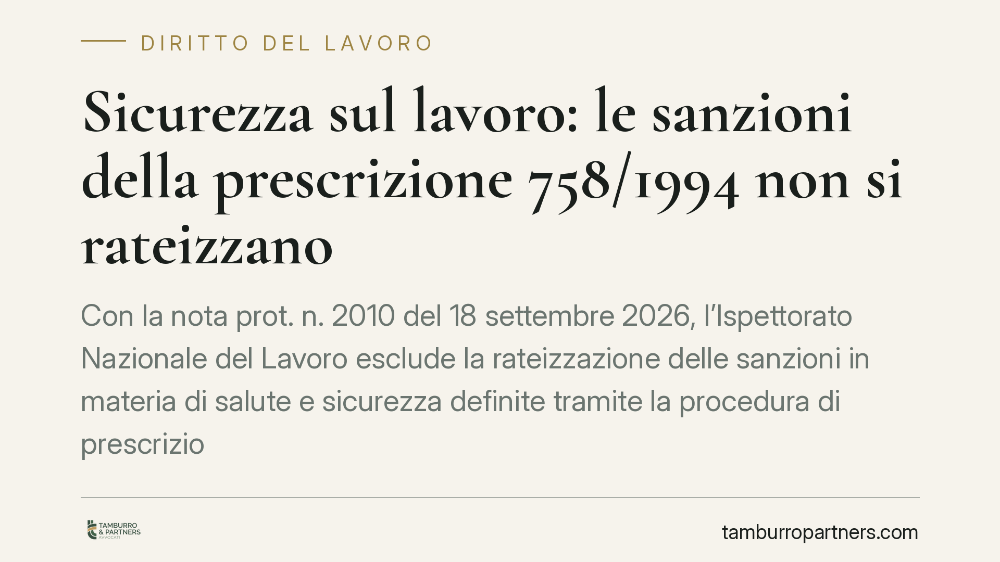

Sicurezza sul lavoro: le sanzioni della prescrizione 758/1994 non si rateizzano
Con la nota prot. n. 2010 del 18 settembre 2026, l'Ispettorato Nazionale del Lavoro esclude la rateizzazione delle sanzioni in materia di salute e sicurezza definite tramite la procedura di prescrizione del D.lgs. 758/1994. Il datore che elimina la violazione deve versare l'importo ridotto entro trenta giorni, pena la ripresa dell'azione penale.

Il chiarimento dell'INL
L'Ispettorato Nazionale del Lavoro, con la nota prot. n. 2010 del 18 settembre 2026, torna su un punto che generava incertezze operative: la possibilità di pagare a rate la somma dovuta al termine della procedura di prescrizione prevista dal D.lgs. 758/1994.
La risposta è netta. Non esiste alcuna facoltà di rateizzazione. Il pagamento va effettuato in un'unica soluzione entro il termine fissato dalla legge.
Inquadramento normativo
Il D.lgs. 758/1994, agli articoli 20-24, disciplina un meccanismo particolare per le contravvenzioni in materia di igiene e sicurezza sul lavoro. Quando l'organo di vigilanza accerta una violazione, impartisce al datore di lavoro una prescrizione: un ordine di eliminare la situazione irregolare entro un termine determinato.
Se il datore adempie e regolarizza, è ammesso a pagare in sede amministrativa una somma pari a un quarto del massimo dell'ammenda prevista per la contravvenzione (art. 21, comma 2). Il versamento di questa somma, insieme all'eliminazione della violazione, estingue il reato. In termini semplici: si evita il processo penale pagando un importo ridotto.
La norma prevede che il pagamento avvenga entro trenta giorni dalla scadenza del termine fissato per l'adempimento della prescrizione. L'INL precisa ora che questo termine non è dilazionabile e che nessuna disposizione consente di frazionare l'importo. La rateizzazione ammessa per altre tipologie di sanzioni amministrative (ad esempio quella dell'art. 26 della L. 689/1981) non è applicabile a questo istituto, che ha natura e funzione diverse: non è una mera sanzione pecuniaria, ma la condizione a cui la legge subordina l'estinzione di un reato.
Perché la distinzione conta
La procedura del 758/1994 non produce una sanzione amministrativa in senso proprio. Produce un effetto estintivo penale. È questo il motivo per cui le regole sulla dilazione tipiche del diritto amministrativo non entrano in gioco.
La conseguenza pratica è rilevante. Chi non versa l'intera somma nel termine perde il beneficio: il procedimento penale, che era rimasto sospeso, riprende il suo corso. Il datore torna quindi a rispondere della contravvenzione davanti all'autorità giudiziaria, con l'incertezza e i costi che ciò comporta.
Implicazioni pratiche per il datore di lavoro
Per chi riceve una prescrizione, il messaggio è chiaro: la regolarizzazione va pianificata considerando l'esborso pieno e immediato.
Non è possibile contare su un piano di rientro. Chi si trova in difficoltà finanziaria non può utilizzare la rateizzazione come strumento per accedere comunque all'estinzione del reato. La sostenibilità economica del pagamento deve essere valutata subito, appena impartita la prescrizione, non a ridosso della scadenza.
Un secondo profilo riguarda i tempi. I trenta giorni decorrono dalla verifica dell'adempimento da parte dell'organo di vigilanza. È essenziale documentare con precisione quando la violazione è stata eliminata e quando l'organo ne prende atto, per non lasciare margini di contestazione sul dies a quo.
Cosa fare in concreto
- Regolarizzate tempestivamente la violazione entro il termine indicato nella prescrizione: l'estinzione del reato presuppone sia l'adempimento sia il pagamento.
- Accantonate l'intero importo appena ricevuta la prescrizione, calcolando un quarto del massimo dell'ammenda: non fate affidamento su alcuna dilazione.
- Verificate e documentate le date dell'eliminazione della violazione e della successiva verifica dell'organo di vigilanza, per fissare con certezza la decorrenza dei trenta giorni.
- Conservate la ricevuta di versamento e trasmettetela agli organi competenti nei modi previsti, così da provare l'avvenuta estinzione.
- Consultate un professionista in caso di dubbi sull'importo, sulla decorrenza o sulla riferibilità della violazione a più soggetti responsabili.
Un'attenzione finale
La nota dell'INL non introduce una regola nuova, ma consolida un'interpretazione che elimina spazi di ambiguità. Per il datore di lavoro significa che la gestione della prescrizione richiede rigore nei tempi e disponibilità immediata delle risorse. Un errore su questo piano non comporta un semplice ritardo sanzionatorio: fa saltare l'intero beneficio e riapre la strada penale.
---
*Contributo informativo a cura di Tamburro & Partners - Avv. Giuseppe Tamburro. Non costituisce parere legale.*
Ogni storia di lavoro ha i suoi tempi.
Se gestisci HR e vuoi un confronto su contenzioso, ispezioni o licenziamenti, scrivi allo studio. Ti rispondiamo entro un giorno lavorativo.